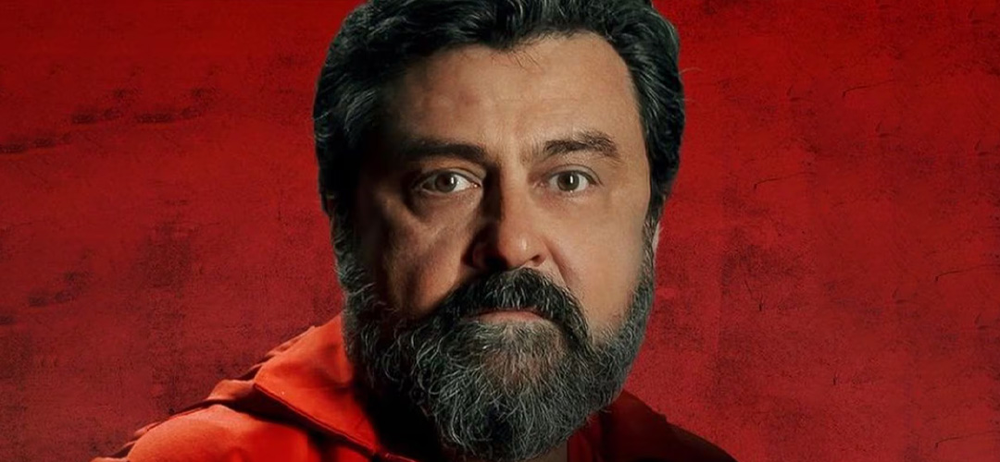

Elenco y Personajes
Cada miembro de la banda lleva el nombre de una ciudad como alias operativo. La regla es impuesta por El Profesor para evitar vínculos personales entre los integrantes. En el transcurso de cinco partes, esas identidades construidas terminan siendo más reales que los nombres de origen.
El Profesor
Álvaro Morte
El arquitecto de los atracos. Sergio Marquina pasó décadas planificando cada movimiento con una precisión quirúrgica. Meticuloso, frío ante la teoría y vulnerablemente humano ante las emociones, su punto débil surge cuando se enamora de la inspectora Raquel Murillo durante la negociación del primer atraco. Ese vínculo inesperado cambia el rumbo de toda la operación.
Tokio
Úrsula Corberó
Narradora de la historia y protagonista del primer atraco. Impulsiva, apasionada y dispuesta a todo por lo que quiere. Su relación con Río es el motor emocional de la segunda saga. Tokio actúa donde otros dudan, lo que la convierte en el elemento más impredecible del grupo y en su mayor activo cuando el plan se rompe.
Berlín
Pedro Alonso
Medio hermano de El Profesor y jefe de operaciones dentro del edificio durante el primer atraco. Refinado, cruel y filosófico, Berlín tiene una visión propia del honor y la lealtad que choca con el resto del grupo. Es uno de los personajes más complejos y polarizantes de la serie, tanto que regresó con su propio spin-off en 2023.
Denver
Jaime Lorente
Joven ladrón de instintos explosivos pero fondo noble. Hijo de Moscú, Denver atraviesa en la primera parte una transformación radical al enamorarse de Mónica Gaztambide, una de las rehenes. Su risa inconfundible, su valentía y su incapacidad para ocultar lo que siente lo convierten en uno de los personajes más queridos de la serie.
Nairobi
Alba Flores
Responsable de la impresión de billetes y figura materna del grupo. Brillante en su trabajo, Nairobi combina una autoridad natural con una emotividad que la distingue del resto. Su historia personal —separada de su hijo por el sistema judicial— le da una profundidad que va más allá del rol de especialista técnica.
Lisboa (Raquel Murillo)
Itziar Ituño
Inspectora jefa asignada a negociar con El Profesor durante el primer atraco. Inteligente, perseverante y moralmente rigurosa, Raquel es la contraparte perfecta del Profesor: cada uno intenta anticipar al otro. Al descubrir la verdad sobre su identidad, su lealtad queda irrevocablemente dividida entre la ley y el amor.
Moscú
Paco Tous

El minero del grupo y padre de Denver. Moscú representa la honestidad y la bondad en un entorno de presión extrema. Experto en perforación, su rol técnico es esencial en el plan de escape. Su relación con su hijo —tensa, amorosa, llena de silencios— es uno de los vínculos más auténticos de toda la serie.
Río
Miguel Herrán
El más joven del grupo y el hacker de la banda. Inexperto y asustado al inicio del primer atraco, Río madura forzado por circunstancias que no eligió. Su captura por Interpol entre la tercera y la cuarta parte es el detonante que lleva a El Profesor a organizar el segundo golpe, convirtiendo a Río en el eje de toda la segunda saga.
Estocolmo (Mónica Gaztambide)
Esther Acebo
Administrativa de la Fábrica de Moneda que comienza la serie como rehén y termina formando parte del grupo. Su relación con Denver transforma su papel por completo. El nombre que adopta —Estocolmo— es un guiño directo al síndrome que lleva ese nombre, aunque la serie subvierte esa lectura simple con matices que la hacen más compleja.
Personajes secundarios destacados
- Helsinki y Oslo Primos serbios, músculos del grupo
- Marsella Hombre de confianza del Profesor, operativo exterior
- Alicia Sierra Inspectora antagonista principal de las partes 3 y 4
- Palermo Socio histórico de Berlín, jefe interno en el segundo atraco
- Bogotá Experto en metalurgia, incorporado en la tercera parte